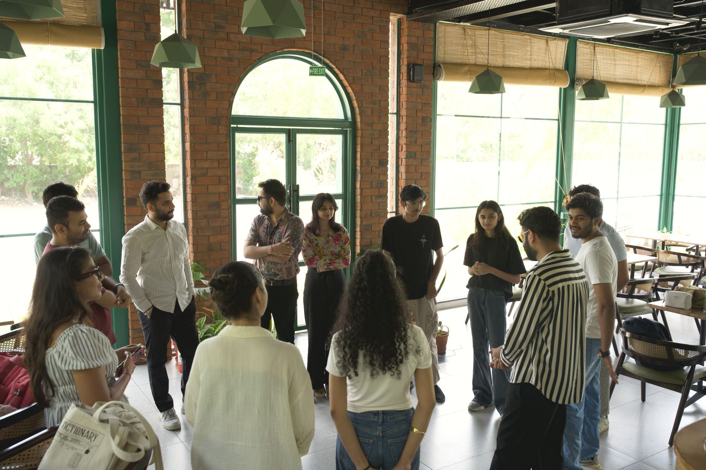
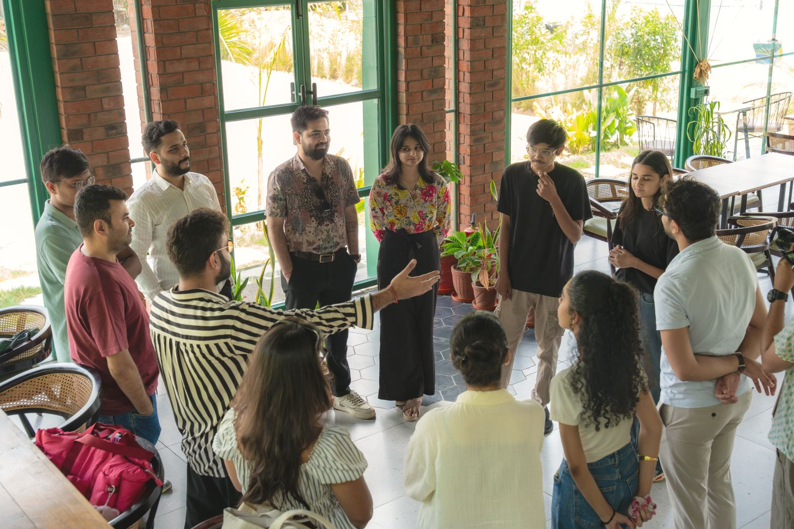
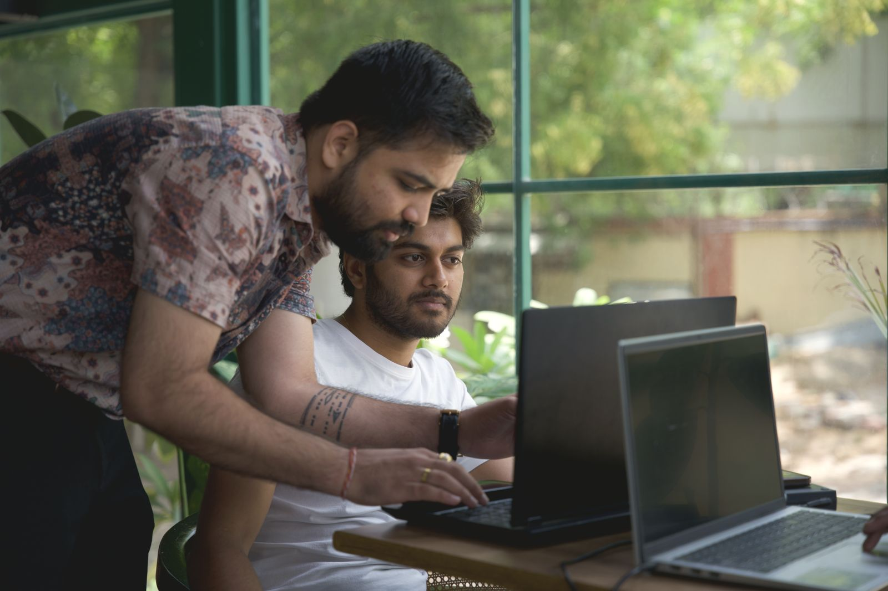

Sunday Morning Build ClubAhmedabad
Everyone brings the thing they keep putting off, and spends three hours actually moving it.
Not coworkingNot networkingNo mundane work
What happens here
One rule: no mundane work. No client deliverables, no inbox, no admin. You have six days for the things that pay. This morning is only for the ambitious thing.
The room


Build & Break, June 2026 — the room this one grew out of.
Who can join
The ask
More people ask than there are seats, which is the only reason this form asks you anything. You hear back either way, within 24 hours.
[ REQUEST SENT ]
Yes or no, on WhatsApp, from this number. A yes comes with a link that holds your seat for 24 hours, and the address comes with it.
Save the number, or tomorrow's reply arrives from a stranger and gets ignored.
Before you ask